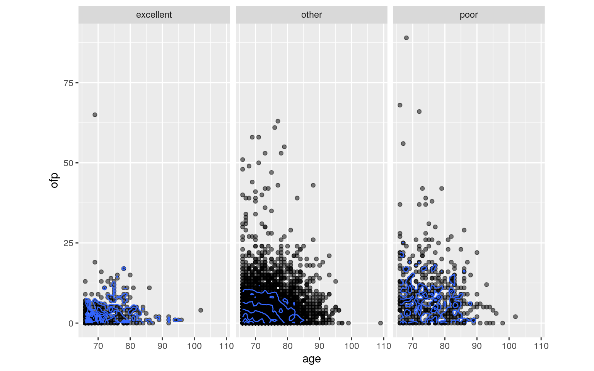
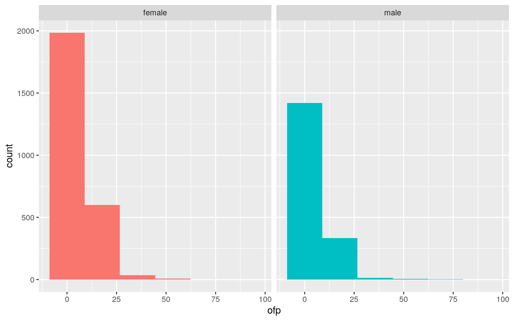
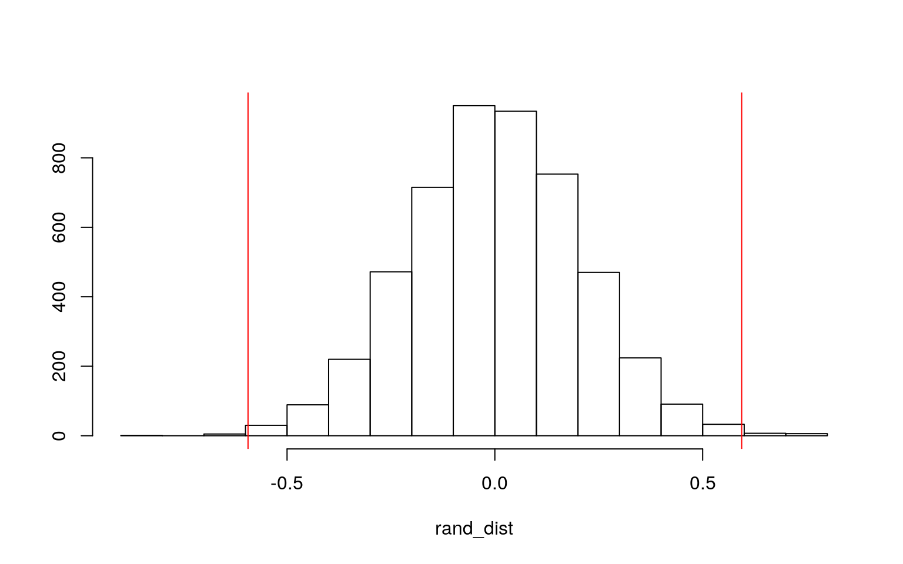
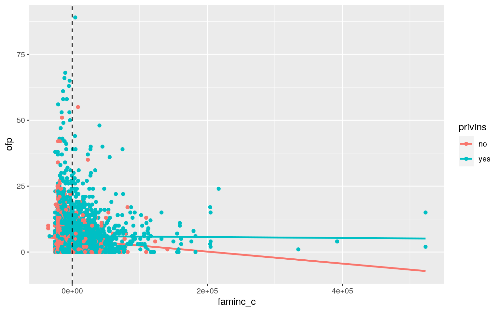
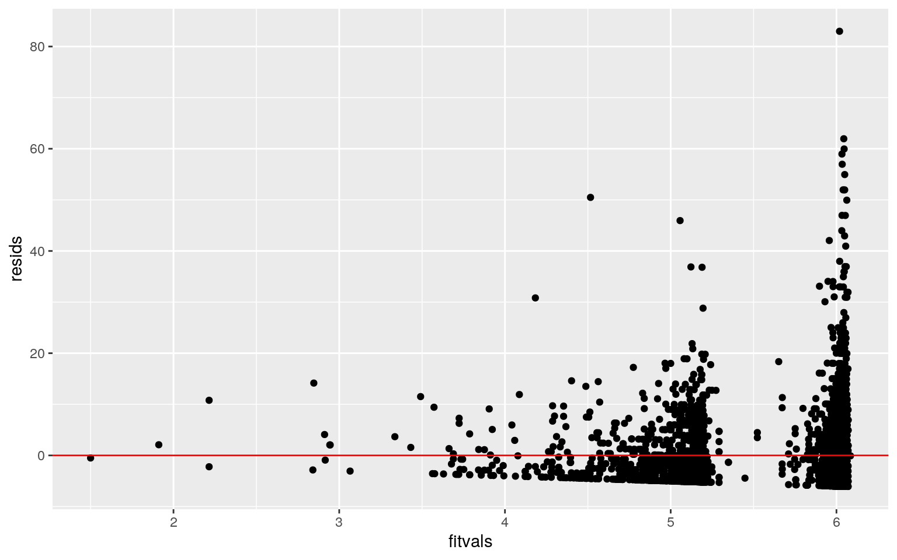
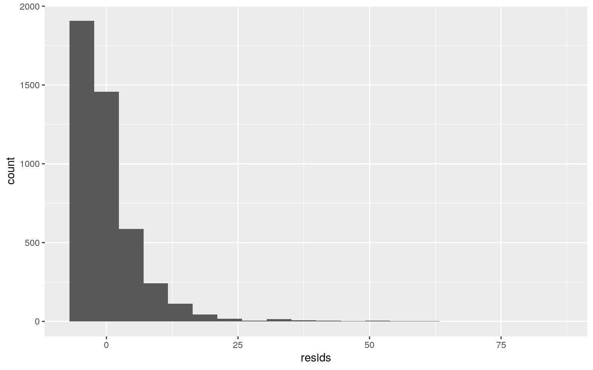
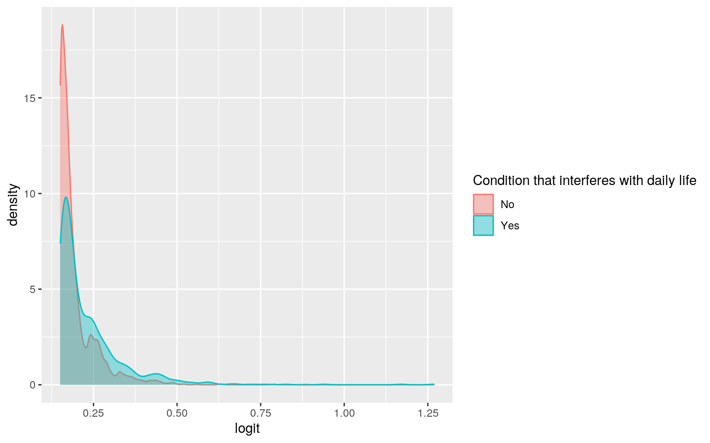
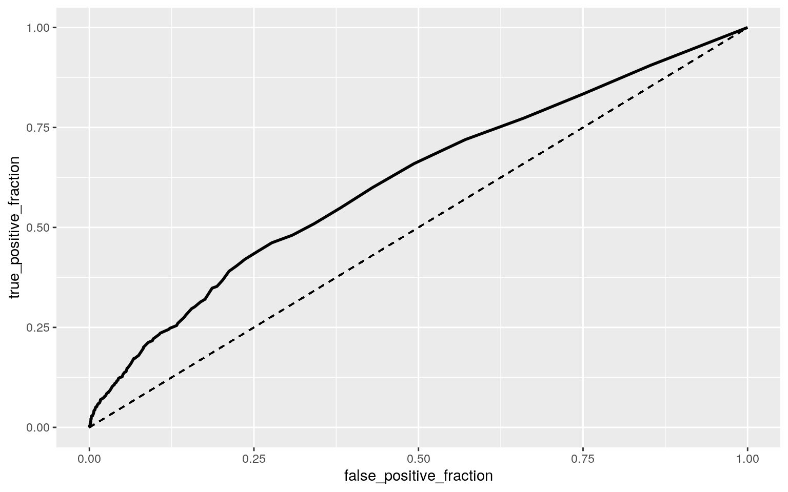

The dataset I am using is titled, "Visits to Physician Office" from the item OFP in the Ecdat package. The original dataset has 4406 observations on 20 variables. The variables I will be using to build models and test hypotheses include the following: 'ofp' is the number of physician office visits. 'emr' is the number of emergency room visits. 'age' is the age in years of the individual. 'sex' indicates whether the individual is male or female. 'adldiff' is a binary variable that is represented by a 1 if the person has a condition that limits activities of daily living and a 0 if not. 'hlth' is the individuals self-perceived health in these groups: excellent, poor, other. 'privins' indicates if the person is covered by private health insurance. 'faminc' is the family income, in dollars, of the individual. 'numchron' is the number of chronic conditions.
#Multivariate plots
ggplot(VPO, aes(x = age, y = ofp)) +
geom_point(alpha = .5) + geom_density_2d(h=2) + coord_fixed() + facet_wrap(~hlth)
#MANOVA
man1<-manova(cbind(age,ofp)~hlth, data=VPO)
summary(man1)## Df Pillai approx F num Df den Df Pr(>F)
## hlth 2 0.048382 54.577 4 8806 < 2.2e-16 ***
## Residuals 4403
## ---
## Signif. codes: 0 '***' 0.001 '**' 0.01 '*' 0.05 '.' 0.1
' ' 1#Get univariate ANOVAs from MANOVA object
summary.aov(man1) ## Response age :
## Df Sum Sq Mean Sq F value Pr(>F)
## hlth 2 1959 979.46 24.675 2.204e-11 ***
## Residuals 4403 174771 39.69
## ---
## Signif. codes: 0 '***' 0.001 '**' 0.01 '*' 0.05 '.' 0.1
' ' 1
##
## Response ofp :
## Df Sum Sq Mean Sq F value Pr(>F)
## hlth 2 7534 3766.9 85.617 < 2.2e-16 ***
## Residuals 4403 193718 44.0
## ---
## Signif. codes: 0 '***' 0.001 '**' 0.01 '*' 0.05 '.' 0.1
' ' 1#MANOVA Assumptions
library(rstatix)
group <- VPO$hlth
DVs <- VPO %>% select(age,ofp)
#Test multivariate normality for each group
sapply(split(DVs,group), mshapiro_test)## excellent other poor
## statistic 0.5897169 0.746149 0.7653659
## p.value 1.082115e-27 8.323181e-59 2.309799e-27#Box's M test (null: assumption met)
box_m(DVs, group)## # A tibble: 1 x 4
## statistic p.value parameter method
## <dbl> <dbl> <dbl> <chr>
## 1 240. 6.15e-49 6 Box's M-test for Homogeneity of
Covariance Matrices#Optionally, view covariance matrices for each group
lapply(split(DVs,group), cov)## $excellent
## age ofp
## age 39.9866332 -0.1812865
## ofp -0.1812865 23.6140351
##
## $other
## age ofp
## age 38.335590 0.783111
## ofp 0.783111 39.813811
##
## $poor
## age ofp
## age 48.12632 -10.57862
## ofp -10.57862 83.13768VPO%>%group_by(hlth)%>%summarize(mean(age),mean(ofp))## # A tibble: 3 x 3
## hlth `mean(age)` `mean(ofp)`
## <fct> <dbl> <dbl>
## 1 excellent 73.1 3.43
## 2 other 73.8 5.51
## 3 poor 75.7 8.90pairwise.t.test(VPO$age,VPO$hlth, p.adj="none")##
## Pairwise comparisons using t tests with pooled SD
##
## data: VPO$age and VPO$hlth
##
## excellent other
## other 0.036 -
## poor 2.0e-09 1.4e-10
##
## P value adjustment method: nonepairwise.t.test(VPO$ofp,VPO$hlth, p.adj="none")##
## Pairwise comparisons using t tests with pooled SD
##
## data: VPO$ofp and VPO$hlth
##
## excellent other
## other 3e-08 -
## poor <2e-16 <2e-16
##
## P value adjustment method: none1-(0.95^9) #probability of at least one type I error## [1] 0.3697506The assumptions for MANOVA were violated as I failed to reject the null hypothesis that assumptions were met (p < 0.05). The assumptions for MANOVA include random samples and independent observations, multivariate normality of DVs, homogeneity of within-group covariance matrices, linear relationships among DVs, no extreme univariate or multivariate outliers, and no multicollinearity. I performed 1 MANOVA, 2 ANOVAs, and 6 t-tests (9 tests), therfore I should use α = .05/9 = .0056 as the bonferroni corrected significance level. With 9 tests, the probability of making at least one type I error is 0.3698 without correction. For the patient office visits (ofp) variable, there is a mean difference across all of the levels of health (poor, other, and excellent) because the p-values are all less than 0.0056. For the age variable, there is a mean difference across the levels other vs poor and excellent vs poor (p-value < 0.0056). There is not a significant difference for age across the health levels excellent vs other (p-value = 0.036) using the bonferroni corrected significance level.
ggplot(VPO,aes(ofp,fill=sex))+geom_histogram(bins=6.5)+
facet_wrap(~sex,ncol=2)+theme(legend.position="none")
VPO%>%group_by(sex)%>%
summarize(means=mean(ofp))%>%summarize(`mean_diff`=diff(means))## # A tibble: 1 x 1
## mean_diff
## <dbl>
## 1 -0.594rand_dist<-vector() #create vector to hold diffs under null hypothesis
for(i in 1:5000){
new<-data.frame(ofp=sample(VPO$ofp),sex=VPO$sex) #scramble columns
rand_dist[i]<-mean(new[new$sex=="female",]$ofp)-
mean(new[new$sex=="male",]$ofp)} #compute mean difference
{hist(rand_dist,main="",ylab=""); abline(v = c(-0.5939, 0.5939),col="red")}
mean(rand_dist > 0.5939 | rand_dist < -0.5939) #pvalue## [1] 0.0038The null hypothesis is that there is no mean difference in physician office visits between males and females. The alternative hypothesis is that there is a mean difference in physician office visits between males and females.
\(H_0:\mu_{female}=\mu_{male}\) vs. \(H_A:\mu_{female}\ne \mu_{male}\)
Females visit the physician office 0.5939 times more on average than males. After performing randomization, the p-value was 0.0056, which indicates we are able to reject the null hypothesis and say there is a mean difference in physician office visits between males and females.
VPO$faminc_c <- VPO$faminc - mean(VPO$faminc)
fit<-lm(ofp ~ privins*faminc_c, data=VPO)
summary(fit)##
## Call:
## lm(formula = ofp ~ privins * faminc_c, data = VPO)
##
## Residuals:
## Min 1Q Median 3Q Max
## -6.071 -4.063 -2.010 1.974 82.981
##
## Coefficients:
## Estimate Std. Error t value Pr(>|t|)
## (Intercept) 4.716e+00 2.362e-01 19.961 < 2e-16 ***
## privinsyes 1.311e+00 2.630e-01 4.985 6.44e-07 ***
## faminc_c -2.280e-05 1.137e-05 -2.005 0.0450 *
## privinsyes:faminc_c 2.107e-05 1.196e-05 1.762 0.0781 .
## ---
## Signif. codes: 0 '***' 0.001 '**' 0.01 '*' 0.05 '.' 0.1
' ' 1
##
## Residual standard error: 6.742 on 4402 degrees of
freedom
## Multiple R-squared: 0.005638, Adjusted R-squared:
0.00496
## F-statistic: 8.32 on 3 and 4402 DF, p-value: 1.626e-05exp(coef(fit))## (Intercept) privinsyes faminc_c privinsyes:faminc_c
## 111.6791252 3.7105512 0.9999772 1.0000211ggplot(VPO, aes(faminc_c,ofp, color = privins)) + geom_smooth(method = "lm", se = F, fullrange = T)+geom_point()+geom_vline(xintercept=0,lty=2)
#Assumptions (linearity and homoskedasticity)
resids<-fit$residuals; fitvals<-fit$fitted.values
ggplot()+geom_point(aes(fitvals,resids))+geom_hline(yintercept=0, col="red")
bptest(fit)##
## studentized Breusch-Pagan test
##
## data: fit
## BP = 2.849, df = 3, p-value = 0.4155#Assumptions (normality)
ggplot()+geom_histogram(aes(resids),bins=20)
ks.test(resids, "pnorm", sd=sd(resids))##
## One-sample Kolmogorov-Smirnov test
##
## data: resids
## D = 0.18389, p-value < 2.2e-16
## alternative hypothesis: two-sided#Regression using robust standard errors
coeftest(fit, vcov=vcovHC(fit))##
## t test of coefficients:
##
## Estimate Std. Error t value Pr(>|t|)
## (Intercept) 4.7156e+00 2.0792e-01 22.6798 < 2.2e-16 ***
## privinsyes 1.3112e+00 2.3970e-01 5.4700 4.75e-08 ***
## faminc_c -2.2804e-05 9.7926e-06 -2.3287 0.01992 *
## privinsyes:faminc_c 2.1075e-05 1.0420e-05 2.0226 0.04317
*
## ---
## Signif. codes: 0 '***' 0.001 '**' 0.01 '*' 0.05 '.' 0.1
' ' 1#adjusted r-squared
(sum((VPO$ofp-mean(VPO$ofp))^2)-sum(fit$residuals^2))/sum((VPO$ofp-mean(VPO$ofp))^2)## [1] 0.005638151#uncorrected SEs
summary(fit)$coef[,1:2]## Estimate Std. Error
## (Intercept) 4.715630e+00 2.362458e-01
## privinsyes 1.311180e+00 2.630313e-01
## faminc_c -2.280402e-05 1.137325e-05
## privinsyes:faminc_c 2.107491e-05 1.195980e-05#corrected SE
coeftest(fit, vcov = vcovHC(fit))[,1:2]## Estimate Std. Error
## (Intercept) 4.715630e+00 2.079218e-01
## privinsyes 1.311180e+00 2.397049e-01
## faminc_c -2.280402e-05 9.792645e-06
## privinsyes:faminc_c 2.107491e-05 1.041952e-05This model is predicting the number of physician office visits from the interaction of insurance (private or not) and family income. The predicted physician office visits (ofp) for an individual with an average family income and no private insurance is 4.716 visits. For a person of average family income, physician office visits is 1.311 greater for those with private insurance than those without. Those without private insurance show a decrease of 2.280e-05 in physician office visits for every 1-unit increase in family income on average. The slope for average family income on physician office visits is 2.107e-05 greater for those with private insurance than those without. The adjusted R-squared is equal to 0.00564, therefore 0.564% of the variation is explained by the model. The model violated the assumptions of linearity, normality, and homoskedasticity (p < 0.05). After recomputing the regression results with robust standard errors, it is evident that the uncorrected and corrected SEs are extremely similar.
fit<-lm(ofp ~ privins*faminc_c, data=VPO)
resids<-fit$residuals
fitted<-fit$fitted.values
resid_resamp<-replicate(5000,{
new_resids<-sample(resids,replace=TRUE)
newdat<-VPO
newdat$new_y<-fitted+new_resids
fit<-lm(new_y ~ privins*faminc_c, data = newdat)
coef(fit)
})
## Bootstrapped SEs (resampling residuals)
resid_resamp%>%t%>%as.data.frame%>%summarize_all(sd)## (Intercept) privinsyes faminc_c privinsyes:faminc_c
## 1 0.2328135 0.2635602 1.151719e-05 1.202325e-05The bootstrapped SEs are extremely similar to the original SEs, and differ slightly to the robust SEs (specifically for 'faminc_c'). Overall, the SE and p-values are similar among each model.
VPO$emr_c <- VPO$emr - mean(VPO$emr, na.rm = T)
VPO$ofp_c <- VPO$ofp - mean(VPO$ofp, na.rm = T)
fit5<-lm(adldiff ~ emr_c + ofp_c, data=VPO, family = "binomial"(link="logit"))
summary(fit5)##
## Call:
## lm(formula = adldiff ~ emr_c + ofp_c, data = VPO, family
= binomial(link = "logit"))
##
## Residuals:
## Min 1Q Median 3Q Max
## -0.8921 -0.1927 -0.1665 -0.1508 0.8492
##
## Coefficients:
## Estimate Std. Error t value Pr(>|t|)
## (Intercept) 0.204040 0.005965 34.205 < 2e-16 ***
## emr_c 0.087430 0.008587 10.181 < 2e-16 ***
## ofp_c 0.005237 0.000894 5.859 5.01e-09 ***
## ---
## Signif. codes: 0 '***' 0.001 '**' 0.01 '*' 0.05 '.' 0.1
' ' 1
##
## Residual standard error: 0.396 on 4403 degrees of
freedom
## Multiple R-squared: 0.03527, Adjusted R-squared: 0.03483
## F-statistic: 80.49 on 2 and 4403 DF, p-value: < 2.2e-16exp(coef(fit5))## (Intercept) emr_c ofp_c
## 1.226347 1.091366 1.005251prob<-predict(fit5,type="response")
pred<-ifelse(prob>.5,1,0)
table(prediction=pred, truth=VPO$adldiff) %>% addmargins## truth
## prediction 0 1 Sum
## 0 3497 875 4372
## 1 10 24 34
## Sum 3507 899 4406(3497+24)/4406 #accuracy## [1] 0.79913753497/4372 #sensitivity (tpr)## [1] 0.799862824/34 #specificity (tnr)## [1] 0.70588243497/3507 #ppv (precision)## [1] 0.9971486VPO$logit<-predict(fit5)
VPO %>% mutate(adldiff = as.character(adldiff)) %>% ggplot(aes(x = logit,fill = adldiff,color = adldiff)) + geom_density(alpha = 0.4) +
scale_fill_discrete(name='Condition that interferes with daily life',labels=c("No", "Yes"))+
scale_color_discrete(name='Condition that interferes with daily life',labels=c("No", "Yes"))
library(plotROC)
ROCplot <- ggplot(VPO)+geom_roc(aes(d=adldiff,m=prob), n.cuts=0)+ geom_segment(aes(x=0,xend=1,y=0,yend=1),lty=2)
ROCplot
calc_auc(ROCplot)## PANEL group AUC
## 1 1 -1 0.6162268The odds of having a condition that limits activities of daily living when the number of physican office visits is 0 and the number of emergency room visits is 0 is 1.2263. Controlling for physican office visits, for every one addtional emergency room visit, the odds of having a condition that limits activities of daily living increases by a factor of 1.0914. Controlling for emergency room visits, for every one addtional physican office visit, the odds of having a condition that limits activities of daily living increases by a factor of 1.0053. The AUC is 0.6162268, which is fair. Sensitivity is 0.79986, which is the true positive rate. The probability of predicting (1) if it is actually true is 79.99%. The true negative rate, or specificity, is 0.70588. The probability of predicting (0) if it is actually false is 70.59%. Precision (PPV) is the proportion of those classified as healthy who actually are, which is 99.71%. The ROC curve allows us to visualize the trade-off between sensitivity and specificity. Curves that are closer to the top-left corner indicate a better performance, so therefore this is a below average classifier. The closer the curve is to the diagonal (FPR = TPR), the less accurate the test.
set.seed(1234)
fit6 <- glm(adldiff~., data=VPO, family="binomial")
summary(fit6)##
## Call:
## glm(formula = adldiff ~ ., family = "binomial", data =
VPO)
##
## Deviance Residuals:
## Min 1Q Median 3Q Max
## -2.1225 -0.5800 -0.3807 -0.2245 2.8834
##
## Coefficients: (4 not defined because of singularities)
## Estimate Std. Error z value Pr(>|z|)
## (Intercept) -1.008e+01 6.368e-01 -15.823 < 2e-16 ***
## X 1.509e-05 3.441e-05 0.439 0.660931
## ofp 9.307e-03 6.469e-03 1.439 0.150231
## ofnp 1.106e-02 7.744e-03 1.429 0.153051
## opp -9.912e-03 1.160e-02 -0.854 0.392860
## opnp 2.390e-02 1.063e-02 2.247 0.024621 *
## emr 1.652e-01 6.516e-02 2.535 0.011245 *
## hosp 1.031e-01 5.859e-02 1.760 0.078482 .
## numchron 2.418e-01 3.297e-02 7.334 2.23e-13 ***
## age 1.053e-01 6.932e-03 15.185 < 2e-16 ***
## blackyes -1.006e-01 1.398e-01 -0.719 0.471954
## sexmale -3.810e-01 1.027e-01 -3.709 0.000208 ***
## mariedyes -2.571e-01 1.026e-01 -2.506 0.012212 *
## school -3.530e-02 1.283e-02 -2.752 0.005926 **
## faminc -2.244e-06 1.988e-06 -1.129 0.259008
## employedyes -6.745e-01 2.233e-01 -3.021 0.002523 **
## privinsyes -1.645e-01 1.209e-01 -1.360 0.173770
## medicaidyes 7.267e-01 1.514e-01 4.801 1.58e-06 ***
## regionnoreast 1.168e-02 1.346e-01 0.087 0.930888
## regionother 1.769e-02 1.161e-01 0.152 0.878899
## regionwest 2.065e-01 1.357e-01 1.522 0.127902
## hlthother 6.299e-01 2.324e-01 2.711 0.006708 **
## hlthpoor 2.035e+00 2.540e-01 8.010 1.15e-15 ***
## faminc_c NA NA NA NA
## emr_c NA NA NA NA
## ofp_c NA NA NA NA
## logit NA NA NA NA
## ---
## Signif. codes: 0 '***' 0.001 '**' 0.01 '*' 0.05 '.' 0.1
' ' 1
##
## (Dispersion parameter for binomial family taken to be 1)
##
## Null deviance: 4458.5 on 4405 degrees of freedom
## Residual deviance: 3400.2 on 4383 degrees of freedom
## AIC: 3446.2
##
## Number of Fisher Scoring iterations: 5logodds <- predict(fit6, type="link")
prob <- predict(fit6, type="response")
class_diag(prob,VPO$adldiff)## acc sens spec ppv f1 auc
## 1 0.8259192 0.3437152 0.9495295 0.6358025 0.4462094
0.8253044table(predict=as.numeric(prob>.5),truth=VPO$adldiff)%>%addmargins## truth
## predict 0 1 Sum
## 0 3330 590 3920
## 1 177 309 486
## Sum 3507 899 4406#Repeated random sub-sampling
set.seed(1234)
k=10
data<-VPO[sample(nrow(VPO)),] #randomly order rows
folds<-cut(seq(1:nrow(VPO)),breaks=k,labels=F) #create folds
diags<-NULL
for(i in 1:k){
## Create training and test sets
train<-data[folds!=i,]
test<-data[folds==i,]
truth<-test$adldiff ## Truth labels for fold i
## Train model on training set (all but fold i)
fit<-glm(adldiff~.,data=train,family="binomial")
## Test model on test set (fold i)
probs<-predict(fit,newdata = test,type="response")
## Get diagnostics for fold i
diags<-rbind(diags,class_diag(probs,truth))
}
summarize_all(diags,mean)## acc sens spec ppv f1 auc
## 1 0.822298 0.3343652 0.9474122 0.6210535 0.432176
0.8198326#LASSO
library(glmnet)
y<-as.matrix(VPO$adldiff) #grab response
x<-model.matrix(adldiff~-1+.,data=VPO) #grab predictors
head(x); x<-scale(x)## X ofp ofnp opp opnp emr hosp numchron age blackno
blackyes sexmale mariedyes school faminc
## 1 1 5 0 0 0 0 1 2 69 0 1 1 1 6 28810
## 2 2 1 0 2 0 2 0 2 74 1 0 0 1 10 27478
## 3 3 13 0 0 0 3 3 4 66 0 1 0 0 10 6532
## 4 4 16 0 5 0 1 1 2 76 1 0 1 1 3 6588
## 5 5 3 0 0 0 0 0 2 79 1 0 0 1 6 6588
## 6 6 17 0 0 0 0 0 5 66 1 0 0 0 7 3301
## employedyes privinsyes medicaidyes regionnoreast
regionother regionwest hlthother hlthpoor
## 1 1 1 0 0 1 0 1 0
## 2 0 1 0 0 1 0 1 0
## 3 0 0 1 0 1 0 0 1
## 4 0 1 0 0 1 0 0 1
## 5 0 1 0 0 1 0 1 0
## 6 0 0 1 0 1 0 0 1
## faminc_c emr_c ofp_c logit
## 1 3538.68 -0.2635043 -0.7743985 0.1769460
## 2 2206.68 1.7364957 -4.7743985 0.3308560
## 3 -18739.32 2.7364957 7.2256015 0.4811342
## 4 -18683.32 0.7364957 10.2256015 0.3219869
## 5 -18683.32 -0.2635043 -2.7743985 0.1664713
## 6 -21970.32 -0.2635043 11.2256015 0.2397945cv<-cv.glmnet(x,y,family="binomial")
lasso<-glmnet(x,y,family="binomial",lambda=cv$lambda.1se)
coef(lasso)## 28 x 1 sparse Matrix of class "dgCMatrix"
## s0
## (Intercept) -1.59377500
## X .
## ofp .
## ofnp .
## opp .
## opnp .
## emr .
## hosp 0.01706730
## numchron 0.25479620
## age 0.55156896
## blackno .
## blackyes .
## sexmale -0.05905480
## mariedyes -0.08456146
## school -0.04630380
## faminc .
## employedyes -0.01694148
## privinsyes .
## medicaidyes 0.20103813
## regionnoreast .
## regionother .
## regionwest .
## hlthother .
## hlthpoor 0.41622841
## faminc_c .
## emr_c .
## ofp_c .
## logit 0.09353816#CV on variables that lasso selected
set.seed(1234)
k=10 #choose number of folds
#create dummies for the ranks
VPO<-VPO %>% mutate(sexmale=ifelse(VPO$sex=="male",1,0),
marriedyes=ifelse(VPO$maried=="yes",1,0),medicaidyes=ifelse(VPO$medicaid=="yes",1,0), poorhealth=ifelse(VPO$hlth=="poor",1,0))
data1<-VPO[sample(nrow(VPO)),] #randomly order rows
folds<-cut(seq(1:nrow(VPO)),breaks=k,labels=F) #create folds
diags<-NULL
for(i in 1:k){
## Create training and test sets
train<-data1[folds!=i,]
test<-data1[folds==i,]
truth<-test$adldiff
## Train model on training set
fit<-glm(adldiff~hosp+numchron+age+school+marriedyes+sexmale+medicaidyes+poorhealth,data=train,family="binomial")
probs<-predict(fit,newdata = test,type="response")
## Test model on test set (save all k results)
diags<-rbind(diags,class_diag(probs,truth))
}
diags%>%summarize_all(mean)## acc sens spec ppv f1 auc
## 1 0.8250237 0.332373 0.9513741 0.6365595 0.4339491
0.8168159The in-sample model has an AUC of 0.8253, which is good! Sensitivity is 0.3437, which is the true positive rate. The probability of predicting (1) if it is actually true is 34.37%. The true negative rate, or specificity, is 0.9495. The probability of predicting (0) if it is actually false is 94.95%. Precision (PPV) is the proportion of those classified in good health who actually are, which is 63.58%. The out-of-sample model has an AUC of 0.8198, which is good but lower than the in-sample AUC, which indicates overfitting! Sensitivity is 0.3344, which is the true positive rate. The probability of predicting (1) if it is actually true is 33.44%. The true negative rate, or specificity, is 0.9474 The probability of predicting (0) if it is actually false is 94.74%. Precision (PPV) is the proportion of those classified as in good health who actually are, which is 62.11%. The classification diagnostics are very similar for both models. After performing LASSO, the variables that are retained are hosp, numchron, age, school, sex, maried, employed, medicaid, and hlthpoor. The AUC for the logistic regression using the variables lasso selected was 0.8168, which is good. This AUC is very similar to the out-of-sample AUC.
...